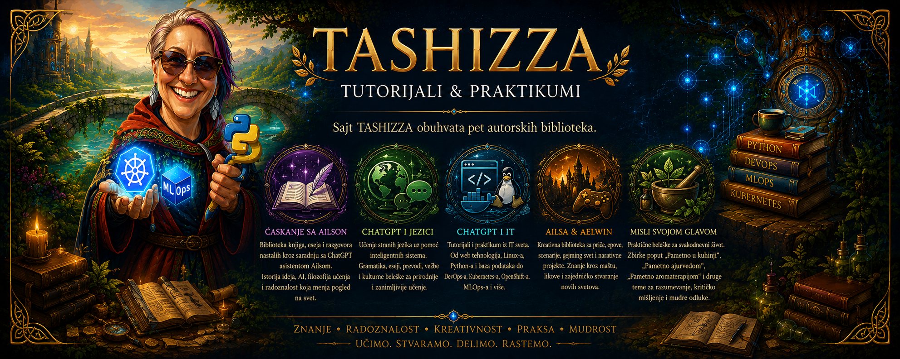

dobrodošli
pametno...
...u kuhinji
...ajurvedom
...aromaterapijom
IT tutorijali
Linux
Linux osnove
Bash & Python
Linux Administracija & Mreže
Podaci
Relacione baze podataka
NoSQL
OLTP i OLAP
ETL i ELT
Data Lake
Data Warehouse
Lakehouse
Analitički modeli
Cloud Native
GitHub
YAML
Kubernetes
DevOps platforme
vanilla Kubernetes
VMware
VMware & Tanzu
RedHat
RedHat & OpenShift
Vodič kroz DevOps na tri platforme
IT menadžment
Životni vek IT opreme u velikoj kompaniji
IT audit: IKT strategija
Automatizacija
Ansible
OpenStack
Python Metaprogramiranje
Pouzdanost i operacije
SRE - Site Reliability Engineering
MLOps
AIOps
Računarska inteligencija
Matematičke osnove AI
ML algoritmi
Python za neuralne mreže
Deep Learning
Reinforcement Learning
Fuzzy logika
Ekspertni sistemi
Genetski algoritmi
Swarm inteligencija
Hibridni sistemi
ChatGPT i jezici
Slovenački
Francuski
Italijanski
ćaskanje sa Ailsom
Ljubavno pismo učenju
Mislioci i Sintesius
Dijagnostika Savremenog Okruženja
Ailsa & Aelwin
Ep o Ubuntuu
reč autora
biblioteke
širi znanje
donacija